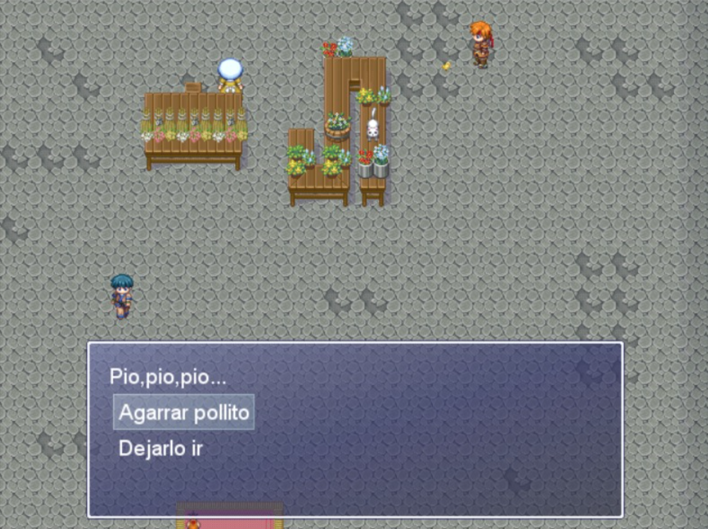

Protectores de la Biodiversidad
Un juego educativo de concientización ambiental en Moniquirá, Boyacá.
Bienvenido a la Aventura
Moniquirá es un territorio reconocido por sus hermosos paisajes, sus fuentes hídricas y su riqueza agrícola. Sin embargo, el aumento incontrolado de basura, el mal manejo de plásticos y la contaminación de las fuentes de agua amenazan con destruir la biodiversidad de este valioso municipio boyacense.
Protectores de la Biodiversidad es un videojuego interactivo diseñado para enseñar sobre reciclaje y cuidado del agua. A través de distintos niveles, recorrerás las calles principales, las cuencas del río y los lugares del pueblo para clasificar residuos, limpiar el entorno y devolverle la vida a la región.
Captura del Juego
Previsualización de los escenarios, personajes y mecánicas en Moniquirá:
